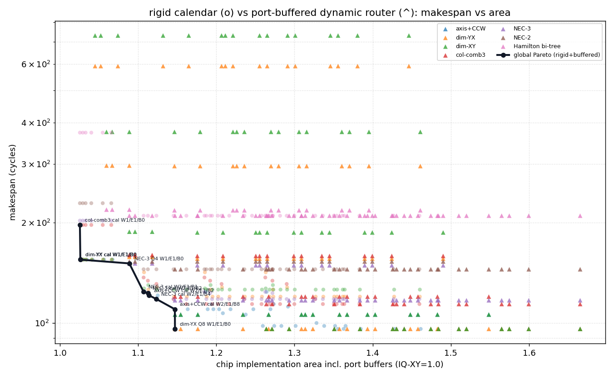
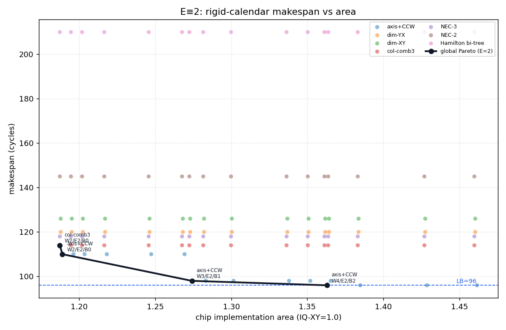
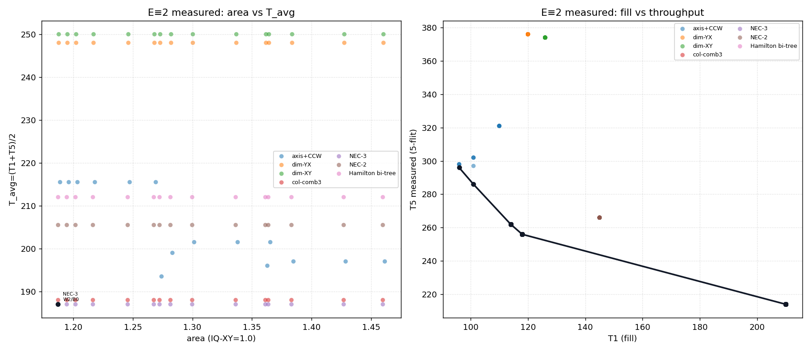
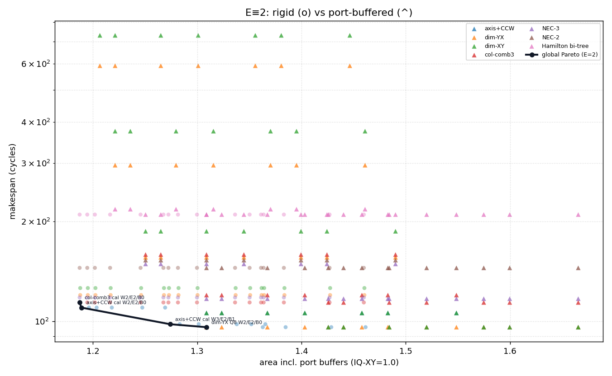

1. 散点图与 Pareto 前沿

细线=各方案自身前沿；黑线=全局 Pareto；蓝虚线=rb=2 下限 96。 每点一个 (scheme,W,E,B)。axis 曲线整体压在其他方案左下方（更低 makespan / 相近面积）。
8×6 mesh · H=7 · V=9 · 方案 axis+CCW / dim-XY / dim-YX / col-comb3 / NEC-3 / NEC-2 / Hamilton-bi ·
每方案扫 W/E/B eject 通路变量 · 259 个设计点 · 含多 flit（§5）/ port-buffer（§6）/
E≡2 约束版（§8） · 数据 multi_area_makespan.json 等 · 生成 2026-07-16T11:44:45.981684+00:00
细线=各方案自身前沿；黑线=全局 Pareto；蓝虚线=rb=2 下限 96。 每点一个 (scheme,W,E,B)。axis 曲线整体压在其他方案左下方（更低 makespan / 相近面积）。
| 方案 | Pmax | issue | 树 dilation | makespan 地板* | 地板处面积 | 触及全局Pareto |
|---|---|---|---|---|---|---|
| axis+CCW | 15 | 2 | 96 | 96 | 1.3556 | 是 |
| dim-YX | 5 | 2 | 96 | 120 | 1.1459 | 是 |
| dim-XY | 5 | 2 | 96 | 126 | 1.1240 | 是 |
| col-comb3 | 3 | 2 | 114 | 114 | 1.1618 | 是 |
| NEC-3 | 3 | 2 | 117 | 118 | 1.1235 | 是 |
| NEC-2 | 3 | 2 | 145 | 145 | 1.1070 | 否 |
| Hamilton bi-tree | 3 | 2 | 210 | 210 | 1.1070 | 否 |
* 地板 = 在最大 eject 配置（W=4,E=1,B=11 等）下可达的最低 makespan；受树结构/链路拥塞限制。 面积 = 1.0 核 + 时隙表(Pmax,issue) + CalFork 多播(0.025) + eject(W,E,B) 增量。
| 面积(归一) | makespan | 方案 | eject 配置 W/E/B |
|---|---|---|---|
| 1.0255 | 197 | col-comb3 | W1/E1/B0 |
| 1.0261 | 155 | dim-YX | W1/E1/B0 |
| 1.0261 | 155 | dim-XY | W1/E1/B0 |
| 1.1070 | 124 | NEC-3 | W2/E1/B1 |
| 1.1125 | 123 | NEC-3 | W2/E1/B2 |
| 1.1142 | 121 | axis+CCW | W2/E1/B2 |
| 1.1235 | 118 | NEC-3 | W2/E1/B4 |
| 1.1470 | 110 | axis+CCW | W2/E1/B8 |
| 1.2084 | 107 | axis+CCW | W3/E1/B4 |
| 1.2376 | 106 | axis+CCW | W3/E1/B8 |
| 1.2595 | 98 | axis+CCW | W3/E1/B11 |
| 1.3556 | 96 | axis+CCW | W4/E1/B11 |
若担心低 Pmax 的真实价值（控制复杂度/时序）被本模型低估，可把时隙表(日历)面积人为放大 λ 倍， 观察谁在何 makespan 段夺走 Pareto。axis+CCW 的 Pmax=15 最深，最先受惩罚。
| λ（时隙表面积倍数） | axis+CCW 独占的 makespan | ≤118 段的非axis占有者 | 各方案在 Pareto 上占有的 makespan |
|---|---|---|---|
| 1× | 96, 98, 106, 107, 110, 121 | NEC-3 | axis+CCW: [96, 98, 106, 107, 110, 121]; col-comb3: [197]; dim-XY: [155]; dim-YX: [155]; NEC-3: [118, 123, 124] |
| 20× | 96, 98, 106, 107, 110 | col-comb3, NEC-3 | axis+CCW: [96, 98, 106, 107, 110]; col-comb3: [114, 197]; dim-XY: [155]; dim-YX: [155]; NEC-3: [118, 123, 124] |
| 50× | 96, 98, 106, 107, 110 | col-comb3, NEC-3 | axis+CCW: [96, 98, 106, 107, 110]; col-comb3: [114, 197]; dim-XY: [155]; dim-YX: [155]; NEC-3: [118, 123, 124] |
| 100× | 96, 98, 106, 107, 110 | col-comb3, NEC-3 | axis+CCW: [96, 98, 106, 107, 110]; col-comb3: [114, 197]; dim-XY: [155]; dim-YX: [155]; NEC-3: [118, 123, 124] |
5-flit allgather 原则上是 5 轮 1-flit 方案，但第 k+1 个 flit 不必等第 k 个全部完成——只要 共享资源（链路、下 ramp 写 SRAM 带宽）空出来，就可尽早叠上去。因此有两个都重要、但侧重不同的时延：
细粒度流水每轮就绪一块、就绪即可算，因此真正该优化的是各轮平均就绪时延：
T_avg 同时惩罚高填充时延（T1）和低吞吐（大 T5），且与计算量无关。 纠正：早期把 axis+CCW 的 II 直接取成链路复用 42；在 E=2 下实测 delta2 远小于 42（见 §8.2）。cyclic_lb 仍是周期重放下界，但不能用来估计 “第2个 flit 最早重叠时间”。

左：面积 × 组合指标 T_avg 的全局 Pareto；右：T1（填充）× T5（吞吐）散点—— 可见最优方案发生翻转。
| 方案 | 链路复用 | T1 地板（填充） | II 地板 | T5 地板（吞吐） | T_avg 地板 |
|---|---|---|---|---|---|
| Hamilton bi-tree | 24 | 210 | 1.0 | 214 | 212.0 |
| col-comb3 | 26 | 114 | 26 | 218 | 166.0 |
| NEC-3 | 27 | 118 | 27 | 226 | 172.0 |
| NEC-2 | 27 | 145 | 27 | 253 | 199.0 |
| axis+CCW | 42 | 96 | 42 | 264 | 180.0 |
| dim-XY | 40 | 126 | 40 | 286 | 206.0 |
| dim-YX | 42 | 120 | 42 | 288 | 204.0 |
II 地板 = 链路复用（在 E≥2 时链路复用是瓶颈；E=1 时 ⌈47/E⌉=47 反而更大，所有方案 II=47）。 Hamilton 复用最低（24）却因 T1 太差（填充 210）而 T5 被淘汰。
| 面积 | T_avg | T1 | II | T5 | 方案 | W/E/B |
|---|---|---|---|---|---|---|
| 1.0255 | 291.0 | 197 | 47 | 385 | col-comb3 | W1/E1/B0 |
| 1.0261 | 249.0 | 155 | 47 | 343 | dim-YX | W1/E1/B0 |
| 1.0261 | 249.0 | 155 | 47 | 343 | dim-XY | W1/E1/B0 |
| 1.1070 | 218.0 | 124 | 47 | 312 | NEC-3 | W2/E1/B1 |
| 1.1125 | 217.0 | 123 | 47 | 311 | NEC-3 | W2/E1/B2 |
| 1.1142 | 215.0 | 121 | 47 | 309 | axis+CCW | W2/E1/B2 |
| 1.1235 | 212.0 | 118 | 47 | 306 | NEC-3 | W2/E1/B4 |
| 1.1470 | 204.0 | 110 | 47 | 298 | axis+CCW | W2/E1/B8 |
| 1.1873 | 187.0 | 118 | 34.5 | 256 | NEC-3 | W2/E2/B0 |
| 1.3491 | 166.0 | 114 | 26 | 218 | col-comb3 | W3/E3/B0 |
| T1 | T5 | II | 方案 | W/E/B |
|---|---|---|---|---|
| 96 | 264 | 42 | axis+CCW | W4/E3/B1 |
| 96 | 264 | 42 | axis+CCW | W4/E3/B2 |
| 96 | 264 | 42 | axis+CCW | W4/E3/B4 |
| 96 | 264 | 42 | axis+CCW | W4/E3/B8 |
| 96 | 264 | 42 | axis+CCW | W4/E3/B11 |
| 96 | 264 | 42 | axis+CCW | W4/E4/B0 |
| 96 | 264 | 42 | axis+CCW | W4/E4/B1 |
| 96 | 264 | 42 | axis+CCW | W4/E4/B2 |
| 96 | 264 | 42 | axis+CCW | W4/E4/B4 |
| 96 | 264 | 42 | axis+CCW | W4/E4/B8 |
| 96 | 264 | 42 | axis+CCW | W4/E4/B11 |
| 114 | 218 | 26 | col-comb3 | W3/E3/B0 |
| 114 | 218 | 26 | col-comb3 | W3/E3/B1 |
| 114 | 218 | 26 | col-comb3 | W3/E3/B2 |
| 114 | 218 | 26 | col-comb3 | W3/E3/B4 |
| 114 | 218 | 26 | col-comb3 | W3/E3/B8 |
| 114 | 218 | 26 | col-comb3 | W3/E3/B11 |
| 114 | 218 | 26 | col-comb3 | W4/E3/B1 |
| 114 | 218 | 26 | col-comb3 | W4/E3/B2 |
| 114 | 218 | 26 | col-comb3 | W4/E3/B4 |
| 114 | 218 | 26 | col-comb3 | W4/E3/B8 |
| 114 | 218 | 26 | col-comb3 | W4/E3/B11 |
| 114 | 218 | 26 | col-comb3 | W4/E4/B0 |
| 114 | 218 | 26 | col-comb3 | W4/E4/B1 |
| 114 | 218 | 26 | col-comb3 | W4/E4/B2 |
| 114 | 218 | 26 | col-comb3 | W4/E4/B4 |
| 114 | 218 | 26 | col-comb3 | W4/E4/B8 |
| 114 | 218 | 26 | col-comb3 | W4/E4/B11 |
| 210 | 214 | 1.0 | Hamilton bi-tree | W2/E2/B0 |
| 210 | 214 | 1.0 | Hamilton bi-tree | W2/E2/B1 |
| 210 | 214 | 1.0 | Hamilton bi-tree | W2/E2/B2 |
| 210 | 214 | 1.0 | Hamilton bi-tree | W2/E2/B4 |
| 210 | 214 | 1.0 | Hamilton bi-tree | W2/E2/B8 |
| 210 | 214 | 1.0 | Hamilton bi-tree | W2/E2/B11 |
| 210 | 214 | 1.0 | Hamilton bi-tree | W3/E2/B1 |
| 210 | 214 | 1.0 | Hamilton bi-tree | W3/E2/B2 |
| 210 | 214 | 1.0 | Hamilton bi-tree | W3/E2/B4 |
| 210 | 214 | 1.0 | Hamilton bi-tree | W3/E2/B8 |
| 210 | 214 | 1.0 | Hamilton bi-tree | W3/E2/B11 |
| 210 | 214 | 1.0 | Hamilton bi-tree | W4/E2/B2 |
| 210 | 214 | 1.0 | Hamilton bi-tree | W4/E2/B4 |
| 210 | 214 | 1.0 | Hamilton bi-tree | W4/E2/B8 |
| 210 | 214 | 1.0 | Hamilton bi-tree | W4/E2/B11 |
| 方案 | 最大扇出 | 最小可行 Q | 最优 makespan | 最优配置 | 对应面积 |
|---|---|---|---|---|---|
| axis+CCW | 4 | 8 | 96 | Q16/W1/E1/B0 | 1.2640 |
| dim-YX | 4 | 1 | 96 | Q8/W1/E1/B0 | 1.1472 |
| dim-XY | 4 | 1 | 96 | Q16/W1/E1/B0 | 1.2640 |
| col-comb3 | 3 | 4 | 114 | Q16/W1/E1/B0 | 1.2640 |
| NEC-3 | 3 | 4 | 117 | Q8/W1/E1/B0 | 1.1472 |
| NEC-2 | 2 | 4 | 145 | Q8/W1/E1/B0 | 1.1472 |
| Hamilton bi-tree | 2 | 2 | 210 | Q4/W1/E1/B0 | 1.0888 |
"最小可行 Q"以下会死锁：多播 flit 占住 HOL 等待全部分支 credit，跨树形成循环等待 （如 axis+CCW 在 Q≤4、col-comb3/NEC-3 在 Q≤2 的多数配置死锁）；扇出小的 Hamilton 链 Q=2 即可行。 生产实现需按 turn-model/逃逸 VC 或保守 credit 预留来消除死锁——本模型直接把死锁点判为不可行。

| 面积(归一) | makespan | 设计点 | 控制方式 |
|---|---|---|---|
| 1.0255 | 197 | col-comb3 rigid W1/E1/B0 | 刚性日历 |
| 1.0261 | 155 | dim-YX rigid W1/E1/B0 | 刚性日历 |
| 1.0261 | 155 | dim-XY rigid W1/E1/B0 | 刚性日历 |
| 1.0888 | 151 | NEC-3 buf Q4/W1/E1/B0 | 动态buffer |
| 1.1070 | 124 | NEC-3 rigid W2/E1/B1 | 刚性日历 |
| 1.1125 | 123 | NEC-3 rigid W2/E1/B2 | 刚性日历 |
| 1.1142 | 121 | axis+CCW rigid W2/E1/B2 | 刚性日历 |
| 1.1235 | 118 | NEC-3 rigid W2/E1/B4 | 刚性日历 |
| 1.1470 | 110 | axis+CCW rigid W2/E1/B8 | 刚性日历 |
| 1.1472 | 96 | dim-YX buf Q8/W1/E1/B0 | 动态buffer |
结构（NEC-3 的转置，三段式）：
关键性质（数据取自 §2/§5 表）：
本附录从完整 DSE 中筛出 E=2 的设计点并重算三张 Pareto（W、B 仍自由，约束仍是 W≥E，
且 B=0 仅当 W=E）。面积含 E=2 带来的 gather-SRAM 双写口增量。数据：
e2_pareto_views.json；脚本 utils/gen_e2_pareto_views.py。

| 面积(归一) | makespan | 方案 | W/E/B |
|---|---|---|---|
| 1.1873 | 114 | col-comb3 | W2/E2/B0 |
| 1.1890 | 110 | axis+CCW | W2/E2/B0 |
| 1.2741 | 98 | axis+CCW | W3/E2/B1 |
| 1.3629 | 96 | axis+CCW | W4/E2/B2 |
| 方案 | makespan 地板（E=2） | 地板处面积 |
|---|---|---|
| axis+CCW | 96 | 1.3629 |
| dim-YX | 120 | 1.1879 |
| dim-XY | 126 | 1.1879 |
| col-comb3 | 114 | 1.1873 |
| NEC-3 | 118 | 1.1873 |
| NEC-2 | 145 | 1.1873 |
| Hamilton bi-tree | 210 | 1.1873 |
检查结论（axis+CCW @ E=2）：在 T1=96（W4/E2/B2）的可行 1-flit 排图上， 逐源发第 2 个 flit 的最早间隔 delta2 = 2 / 16.79 / 31（min/avg/max）， 全部 < cyclic_lb = 42。把 II 直接取成链路复用 42 会高估“第2 flit 重叠”限制。 周期重放下界 cyclic_lb=max(reuse, ⌈47/2⌉)=42 仍然成立，但只约束整表平移重放， 不约束 one-shot / 逐源自由重叠。

| 方案 | 链路复用 | cyclic_lb | T1 | delta2 min/avg/max | II_eff | T5（实测） | T_avg |
|---|---|---|---|---|---|---|---|
| Hamilton bi-tree | 24 | 24 | 210 | 1/1.0/1 | 1.0 | 214 | 212.0 |
| NEC-3 | 27 | 27 | 118 | 1/6.71/23 | 34.5 | 256 | 187.0 |
| col-comb3 | 26 | 26 | 114 | 1/14.17/33 | 37.0 | 262 | 188.0 |
| NEC-2 | 27 | 27 | 145 | 1/2.67/6 | 30.25 | 266 | 205.5 |
| axis+CCW | 42 | 42 | 96 | 2/16.79/31 | 46.25 | 286 | 193.5 |
| dim-XY | 40 | 40 | 126 | 3/31.5/80 | 62.0 | 374 | 250.0 |
| dim-YX | 42 | 42 | 120 | 2/32.08/70 | 64.0 | 376 | 248.0 |
T5 / II_eff 来自 (source,round) 自由贪心打包（round_major / source_major）； delta2 为固定其余源偏移后、单源第2 flit 的最早可注入间隔。 axis+CCW：T1=96，delta2≪42，实测 T5≈286（II_eff≈46.25）。
| 面积 | T_avg | T1 | II_eff | delta2_avg | T5 | 方案 | W/E/B |
|---|---|---|---|---|---|---|---|
| 1.1873 | 187.0 | 118 | 34.5 | 6.71 | 256 | NEC-3 | W2/E2/B0 |
| T1 | T5 | II_eff | delta2 min/avg/max | 方案 | W/E/B |
|---|---|---|---|---|---|
| 96 | 296 | 50.0 | 2/16.79/31 | axis+CCW | W4/E2/B2 |
| 101 | 286 | 46.25 | 1/10.92/34 | axis+CCW | W3/E2/B1 |
| 114 | 262 | 37.0 | 1/14.17/33 | col-comb3 | W2/E2/B0 |
| 118 | 256 | 34.5 | 1/6.71/23 | NEC-3 | W2/E2/B0 |
| 210 | 214 | 1.0 | 1/1.0/1 | Hamilton bi-tree | W2/E2/B0 |

| 面积(归一) | makespan | 设计点 | 控制方式 |
|---|---|---|---|
| 1.1873 | 114 | col-comb3 rigid W2/E2/B0 | 刚性日历 |
| 1.1890 | 110 | axis+CCW rigid W2/E2/B0 | 刚性日历 |
| 1.2741 | 98 | axis+CCW rigid W3/E2/B1 | 刚性日历 |
| 1.3089 | 96 | dim-YX buf Q8/W2/E2/B0 | 动态buffer |
E≡2 下的实用取舍：贴 96 → 刚性 axis+CCW W4/E2/B2，或动态 dim-YX Q8 （免排图，面积略低）；细粒度早重叠看 delta2（axis 可 ≪42），5-flit 总吞吐看实测 T5/II_eff； 不要再用 II=链路复用估算 axis 的第2 flit 重叠。
生成脚本：utils/gen_multi_area_report.py ·
DSE/绘图：utils/dse_multi_area_makespan.py、utils/dse_multiflit_area_makespan.py、
utils/dse_portbuf_area_makespan.py、utils/gen_e2_pareto_views.py（复用
dse_burst_sweep_8x6.py、dse_axis_area_makespan.py、ppa_analytic_model.py）